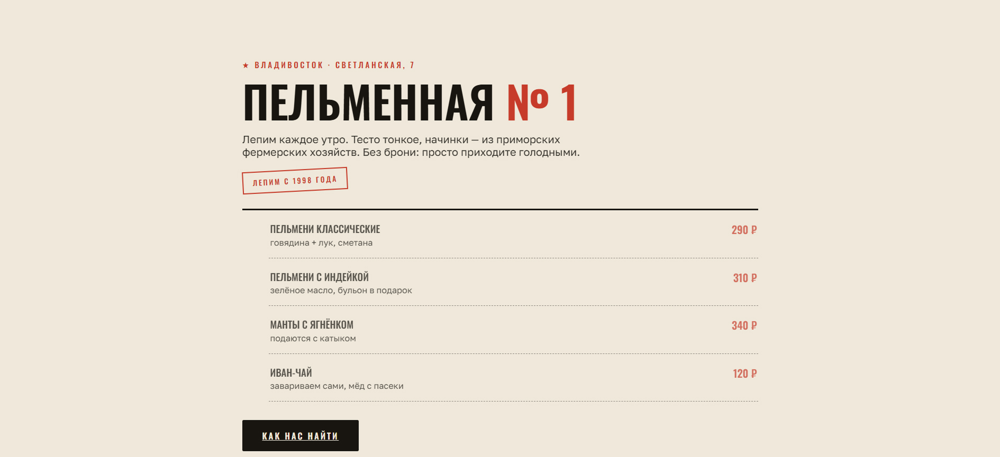

кейс 02 · концепт
Открыть в новой вкладке ↗
меню · десктоп 
меню · мобайл
Редизайн: кафе «Пельменная»
Задача
Показать, как устаревший сайт кафе превращается в современный, не теряя характера: посетитель должен сразу понимать, где меню, как заказать и почему это вкусно.
Что уже сделали
- Собрали интерактивное «до/после» типичного устаревшего сайта кафе — переключатель внутри окна выше.
- Показали принципы: меню на первом экране, читаемые цены, понятный характер.
- Дальше в плане: редизайн реального заведения во Владивостоке в Figma — и письмо владельцу.
Новое меню — скриншоты из Figma
